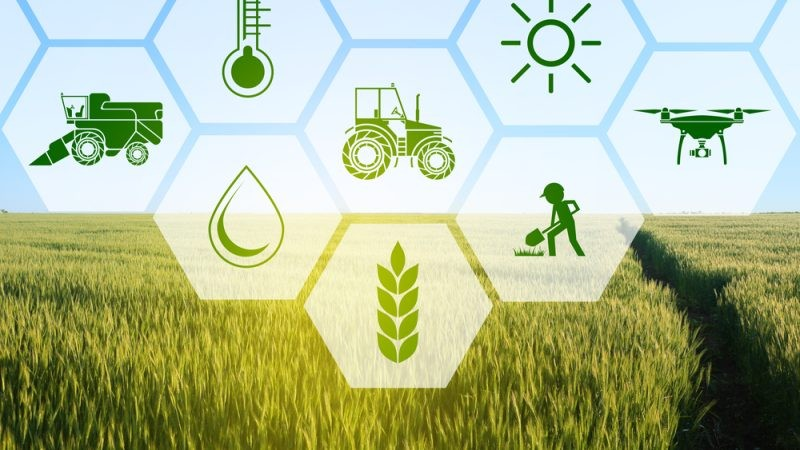

An aspiring young lady. A data analyst, a farmer,a wife and a mother.
Oumie Bojang, a data analyst who has quite an interest in agriculture. Wants to make sure the people of her country have a good living condition
Here is a timeline of Oumie's life
1990 - Oumie was born in the Gambia at a village called Kartong. She was raised by typical mandinka parents who were farmers. Her father who was so in love with western education made sure to see her through school.
2000 - Luckily for her dad, Oumie was a brilliant student. Though so unfortunate for him, he died in the year 2000 while Oumie was in grade 7. He did not live to witness her daughter's success.
One might think this will be the end of Oumie's educational journey but her mom made sure to fulfill her husband's dreams which is to make sure Oumie is educated
2008 - After the completion of secondary school, Oumie joined the University of The Gambia where she studied Computer Science. Some of the things she love doing is problem solving, this made her build interest in computer science.
2012 - 4 years later she completed her barchelors program at the University and applied for masters abroad.
2013 - She left the country for United Kingdom to study her master's program at the Oxford University. She specialized in dala analyzing.
2015 - 2 years later she graduated as the top student in her department, which earned her a good paying job at United Kingdom where she had completed her masters.Though Oumie doesn't want to stay permanently outside her country. From the beginning the plan was to get as much knowledge as possible then come back to make impact in her motherland.
The good thing about IT is you can work remotely that made things easy for her.
2016 - Shortly an year after, she came back to Gambia and got married at the age of 25. She got married to a man she met in The Gambia before leaving for masters
2018 - She became a mom of a bouncing baby boy 2 years into the marriage and named him after her dad.
2024 - Eventhough Oumie loves her current job so much but there is a saying "An apple doesn't fall far from the tree." Oumie's parents were farmers so its only natural that she builds interest in farming.
In 2024, She decided to venture into commercial farming due to the high cost of living in the country. The main aim of the project is to supply sufficient rice and onion to all parts of the country and still have enough to export. The project is still in progress, hopefully more crop types will be added to the current ones later.
